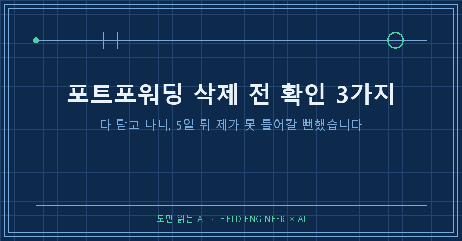
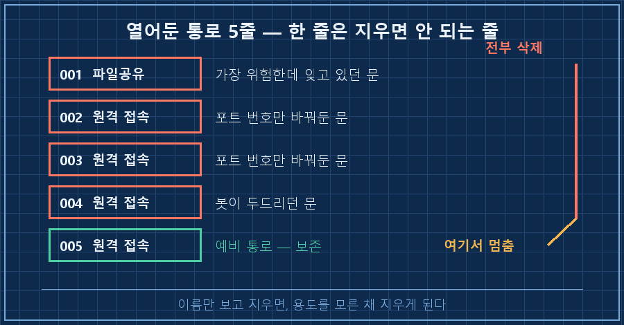
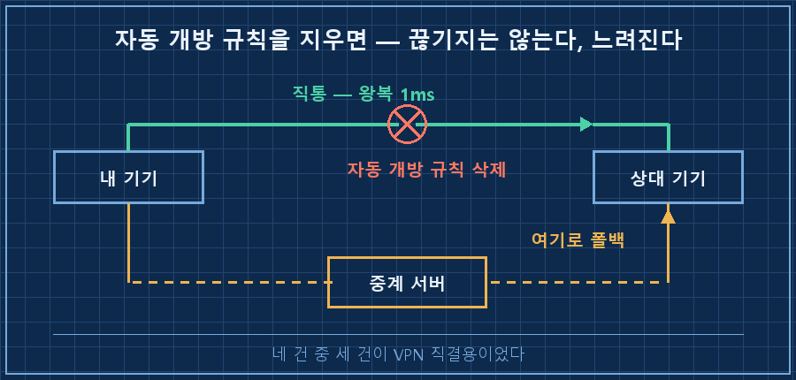
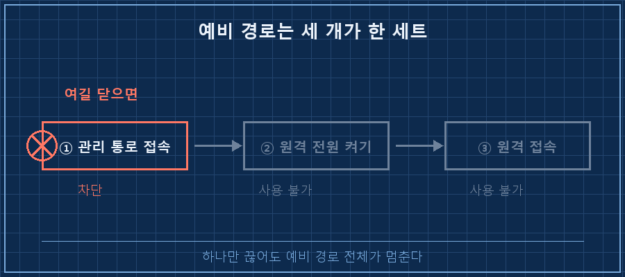

삭제 버튼을 눌렀는데 아무것도 안 지워졌어요. 화면에 뜬 건 "삭제할 규칙을 선택하세요" 한 줄이었고, 저는 그 한 줄 덕분에 살았습니다.
포트포워딩 삭제는 열린 걸 닫는 단순 작업처럼 보이지만, 실제로는 밖에서 내가 들어오는 문까지 같이 닫는 일이에요. 그날 목록에는 봇이 두드리던 문도 있었고, 제 유일한 예비 통로도 섞여 있었습니다. 확인할 건 결국 세 가지였어요. ①이 규칙이 없으면 뭐가 안 되는지 ②내가 만든 건지 프로그램이 연 건지 ③남긴 통로가 혼자서도 작동하는지.
2026년 9월 기준이고, 집에 PC를 켜두고 밖에서 원격으로 쓰는 구조면 그대로 해당됩니다. 공유기 관리 페이지만 열면 되고 따로 설치할 건 없어요.
현장에서 15년째 제어 일을 합니다. 설비에 안전장치를 거는 게 업무의 절반인데, 차단기 하나 내리기 전에 "이거 내리면 뭐가 같이 죽나"부터 따지는 게 몸에 뱄어요. 정작 제 집 공유기 앞에서는 그 습관을 안 썼습니다..
1. 닫아야 할 이유는 확실했어요
며칠 전 제 계정이 하루에 38번 잠겼습니다. 원격 접속 포트가 인터넷에 그대로 열려 있었고, 봇이 6시간 동안 로그인을 8,775번 두드리고 있었거든요. 비밀번호가 뚫린 게 아니라, 실패 횟수가 쌓여서 제가 막혀 있던 상황이었어요.
급한 불은 PC 방화벽으로 껐고, 며칠 뒤 공유기에서 근본을 지우기로 했습니다. 여기까지는 순서가 맞았어요.
2. 목록을 펼치니 다섯 줄이 나왔습니다
AI한테 공유기 관리 화면을 캡처해서 목록으로 정리시켰어요. 이렇게 나왔습니다. (기기 이름과 포트 번호는 익명화했습니다)
사용자 규칙 (5/500)
001 NAS 파일공유 → 내부 NAS : 파일공유 포트가 인터넷에 열림
002 노트북 B (무선) → 내부 PC : 원격 포트
003 노트북 B (유선) → 내부 PC : 원격 포트
004 이 노트북 원격 → 내부 PC : 원격 포트 ← 봇이 두드리던 문
005 데스크톱 원격 → 내부 PC : 원격 포트원격 접속 포트가 네 개나 열려 있었어요. 저는 한 개인 줄 알았고, 그 한 개만 막아뒀습니다. 나머지 세 대는 포트 번호를 기본값이 아닌 걸로 바꿔놨는데, 열린 포트를 훑고 다니는 쪽에서는 번호가 몇 번이든 상관이 없죠. 번호 변경은 숨긴 게 아니라 위치만 옮긴 거였어요.
그리고 제일 위험한 줄은 원격이 아니라 001이었습니다. 파일공유 포트는 랜섬웨어가 제일 좋아하는 입구거든요. 정작 저는 그 줄을 몇 년 동안 보고도 안 보고 있었습니다..

여기까지 보고 "전부 지운다"가 답처럼 보였어요. 그때 옆에서 005는 남기라는 한마디가 날아왔습니다.
3. 자동으로 열린 규칙 네 건 중 세 건이 생명줄이었어요
사용자가 만든 규칙 아래에 자동 개방 목록이 따로 있었습니다. 프로그램이 요청하면 공유기가 알아서 열어주는 항목들이에요.
UPnP 001 NAS 동기화 클라이언트 → 내부 NAS
UPnP 002 VPN 직결용 → 이 노트북
UPnP 003 VPN 직결용 → 다른 노트북
UPnP 004 VPN 직결용 → 이 노트북네 건 중 세 건이 제가 쓰는 원격접속 VPN 툴이 직통 길을 뚫으려고 열어둔 포트였습니다. 지운다고 접속이 끊기지는 않아요. 대신 직통이 깨지고 중계 서버를 거치게 됩니다. 실측으로 직통일 때 왕복이 1ms였는데, 중계로 떨어지면 체감이 바로 달라져요.

"UPnP 정리"라는 말이 참 깔끔하게 들리는데, 그 목록 안에 제 접속 속도가 들어 있던 겁니다.. 게다가 삭제 화면에서 전체 선택 체크박스가 사용자 규칙과 자동 개방 목록에 따로 달려 있었어요. 헤더 하나를 잘못 누르면 여덟 건이 한 번에 사라지는 구조였습니다.
4. 남긴 통로 하나가, 사실은 세 개였어요
005 데스크톱은 상시 켜두는 PC가 아닙니다. 필요할 때만 밖에서 깨워서 쓰는 기계예요. 그래서 노출 시간이 평소엔 거의 0입니다. 24시간 켜둔 PC의 열린 포트와 같은 등급으로 볼 수가 없어요. "포트가 열려 있다"만 보고 지웠으면 이 차이를 놓쳤을 겁니다.
문제는 그 예비 경로가 한 줄이 아니었다는 거예요. 밖에서 데스크톱을 쓰려면 이 순서를 밟아야 합니다.
밖에서 → ① 공유기 관리 페이지로 들어간다
→ ② 거기서 데스크톱을 원격으로 깨운다
→ ③ 깨어난 데스크톱에 원격으로 붙는다②를 쓰려면 ①이 필요하고, ③이 붙으려면 ②가 성공해야 해요. 그런데 ①의 관리 통로도 "열려 있으니 닫자" 목록에 올라가 있었습니다. 승인까지 받아놨다가 되돌렸어요. 셋 중 하나만 지워도 예비 경로 전체가 죽는 구조였거든요.

그리고 마지막에 나온 게 제일 아찔했습니다. 주 통로로 쓰는 VPN의 인증 키를 확인해보니 이랬어요.
인증 키 만료 : 5일 뒤
만료 시 필요 조치 : 브라우저에서 다시 로그인
가능한 위치 : 그 PC 앞만료되면 그 PC 앞에 앉아서 다시 로그인을 해야 합니다. 밖에 있으면 앉을 수가 없죠. 포트를 다 닫고 예비 경로까지 지웠다면, 5일 뒤부터는 집에 도착할 때까지 그 PC가 없는 것과 같았을 겁니다. 조치는 만료를 꺼두는 것 하나였고, 그날 기기 세 대를 전부 그렇게 바꿔놨습니다!
5. 포트포워딩 삭제 전에 던지는 세 가지 질문
| 질문 | 확인 방법 | 안 하면 |
|---|---|---|
| 없으면 뭐가 안 되나 | 규칙 이름 말고 목적지 기기를 본다 | 용도를 모른 채 지운다 |
| 내가 만든 건가, 프로그램이 연 건가 | 자동 개방 목록을 따로 펼친다 | 프로그램이 뚫은 길을 막아버린다 |
| 남긴 통로가 혼자 작동하나 | 접속까지 필요한 단계를 끝까지 적어본다 | 한 칸만 끊겨도 전체가 죽는다 |
실행은 항목별로 끊어서 하세요. 한 번의 클릭으로 네 건이 동시에 사라지는 조작은 중간에 마음이 바뀔 여지를 없앱니다. 제가 지시가 바뀌기 직전에 버튼을 눌렀던 게 정확히 그 상황이었어요.
지우고 나서는 바로 확인하는 게 좋습니다. 저는 네 건을 지운 직후에 원격 세션이 살아 있는지, 직통 경로가 유지되는지 두 개를 봤어요. 세션은 그대로였고 왕복도 1ms 그대로였습니다. 전송량이 14MB에서 59MB로 늘어나는 것까지 보고서야 "안 깨졌다"고 판정했어요.
여러분 공유기에는 지금 몇 개나 열려 있나요? 저는 다섯 개인 줄 알았다가 아홉 개를 봤습니다.
미리 답해두면 좋을 두 가지
Q. 포트포워딩 삭제를 다 해버리면 밖에서 아예 못 들어가는 거 아닌가요?
들어갈 길을 먼저 만들어두고 닫으면 됩니다. 순서가 중요해요. VPN 같은 대체 경로를 깔고, 그 경로로 실제 접속이 성립하는 걸 눈으로 확인한 다음에 포트를 닫는 겁니다. 반대로 하면 닫는 순간 확인할 방법이 사라져요. 저는 이 순서를 한 번 어겼다가, 원격으로 작업하던 세션이 살아 있는지부터 뒤늦게 확인했습니다.
Q. 예비 경로를 남기면 보안이 약해지는 거 아닌가요?
약해지긴 합니다. 다만 위험을 "열려 있다/닫혀 있다"로만 재면 판단이 거칠어져요. 필요할 때만 켜는 기계는 평소에 응답할 대상 자체가 없으니, 24시간 켜둔 기계와 같은 무게로 볼 수 없습니다. 저는 그래서 상시 가동 쪽은 전부 닫고, 가끔 깨우는 쪽 하나만 남겼어요.
목록을 지우는 일이 제일 쉬운 작업인 줄 알았는데, 이번 건에서 제일 오래 걸린 게 그거였습니다. 지금은 삭제 화면을 열면 규칙 이름부터 안 봅니다. 목적지가 어디인지, 그게 없으면 제가 뭘 못 하게 되는지를 먼저 적어요. 이 계열로 하나 더 남았는데, 다음 편은 한글이 들어간 스크립트를 저장했다가 글자가 깨져서 실행이 통째로 실패한 얘기입니다.
지우기 전 확인 목록은 makefield.ai에 정리해서 올려뒀어요.
태그: #포트포워딩삭제 #공유기포트포워딩 #포트포워딩설정 #UPnP삭제 #UPnP설정 #공유기보안설정 #원격접속안될때 #원격데스크톱포트 #홈네트워크보안 #WOL설정 #공유기관리페이지 #NAS외부접속 #AI로PC점검 #AI에게일시키기 #도면읽는AI